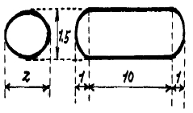
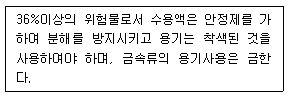

위험물기능장 (2002-04-07 기출문제)
1과목: 임의구분
1. 다음 중 제1석유류에 속하는 것은?
- 산화프로필렌
- 아세톤(CH3COCH3)
- 아세트알데히드(CH3CHO)
- 이황화탄소(CS2)
(정답률: 77%)

2. 다음 위험물 지정수량이 제일 적은 것은?
- 황
- 황린
- 황화린
- 적린
(정답률: 82%)
3. 다음 중 제2석유류에 속하지 않는 것은?
- 경유
- 개미산
- 테레핀유
- 톨루엔
(정답률: 78%)
4. 피리딘을 -NO2 - Br - HSO3 약 300℃ 에서 반응시키면 반응기는 어느 위치에 들어가는가?
- α
- β
- γ
- δ
(정답률: 49%)
5. 다음 금속탄화물이 물과 접촉 했을 때 메탄 가스가 발생 하는 것은?
- Li2C2
- Mn3C
- K2C2
- MgC2
(정답률: 64%)
6. 무수황산 (sulfer trioxide) 이 물과 반응하여 생성하는 물질은?
- H2SO4 와 Cl2
- H2SO4 와 SO3
- H2O 와 SO3
- H2SO4
(정답률: 50%)
7. 산화성고체 위험물의 특징과 성질이 맞게 짝 지어진 것은?
- 산화력 - 불연성
- 환원력 - 불연성
- 산화력 - 가연성
- 환원력 - 가연성
(정답률: 73%)
8. 다음 알콜유 중 지정수량이 100ℓ 에 해당하는 위험물은?
- 아세톤
- 퓨젤유
- 메틸알콜
- 에틸알콜
(정답률: 46%)
9. 제5류 위험물 중 히드라진 유도체류의 지정수량은?
- 50 kg
- 100 kg
- 200 kg
- 300 kg
(정답률: 65%)
10. 다음 위험물은 산화성 고체위험물로서 대부분 무색 또는 백색 결정으로 되어 있다. 이 중 무색 또는 백색이 아닌 물질은?
- KClO3
- BaO2
- KMnO4
- KClO4
(정답률: 71%)
11. 브롬산 염류들은 대부분 어떤 색을 띠는가?
- 백색 또는 무색
- 황색
- 푸른색
- 붉은색
(정답률: 80%)
12. 다음 탱크의 공간용적을 7/100로 할 경우 아래 그림에 나타낸 타원형 위험물 저장탱크의 용량은 얼마인가?

- 20.5m3
- 21.7m3
- 23.4m3
- 25.1m3
(정답률: 55%)
13. 다음 물질 중 알칼리금속 과산화물은 물과의 접촉을 피해야 하는 금수성물질은?
- 과산화세슘
- 과산화마그네슘
- 과산화칼슘
- 과산화바륨
(정답률: 47%)
14. 옥외탱크 저장소에서 펌프실 외의 장소에 설치하는 펌프설비주위 바닥은 콘크리트 기타 불침윤 재료로 경사지게 하고 주변의 턱높이를 몇 m 이상으로 하여야 하는가?
- 0.15m 이상
- 0.20m 이상
- 0.25m 이상
- 0.30m 이상
(정답률: 75%)
15. 상수도 소화용수설비를 설치하여야 할 소방 대상물은 연면적 기준으로 몇 m2 이상인 것인가?
- 1500 m2
- 2000 m2
- 3500 m2
- 5000 m2
(정답률: 41%)
16. 화상은 정도에 따라서 여러가지로 나눈다. 제2도 화상의 다른 명칭은?
- 괴사성
- 홍반성
- 수포성
- 화침성
(정답률: 82%)
17. 아염소산나트륨의 위험성으로 옳지 않은 것은?
- 단독으로 폭발 가능하고 분해온도 이상에서는 산소를 발생한다.
- 비교적 안정하나 시판품은 140℃ 이상의 온도에서 발열 반응을 일으킨다.
- 유기물, 금속분 등 환원성 물질과 접촉하면 즉시 폭발한다.
- 수용액 중에서 강력한 환원력이 있다.
(정답률: 69%)
18. 다음은 위험물의 저장 및 취급시 주의 사항이다. 어떤 위험물인가?

- 염소산 칼륨
- 과염소산마그네슘
- 과산화나트륨
- 과산화수소
(정답률: 77%)
19. 황린(P)이 공기 중에서 발화 했을 때 생성된 화합물은?
- P2O5
- P2O3
- P5O2
- P3O2
(정답률: 78%)
20. 다음 위험물 중 산과 접촉 하였을 때 이산화 염소가스를 발생하는 것은?(오류 신고가 접수된 문제입니다. 반드시 정답과 해설을 확인하시기 바랍니다.)
- KClO3
- NaClO3
- KClO4
- NaClO4
(정답률: 39%)
2과목: 임의구분
21. 위험물의 제조 공정 중 설비내의 압력 및 온도에 직접적 영향을 받지 않는 것은?
- 증류과정
- 추출공정
- 건조공정
- 분쇄공정
(정답률: 78%)
22. 분말소화기(粉末消火器) 의 소화약제에 속하는 것은?
- Na2CO3
- NaHCO3
- NaNO3
- NaCl
(정답률: 83%)
23. 탱크 뒷부분의 입면도에서 측면틀의 최외측과 탱크의 최외측을 연결하는 직선은 수평면에 대한 내각은 얼마이상이 되도록 하는가?
- 50° 이상
- 65° 이상
- 75° 이상
- 90° 이상
(정답률: 89%)
24. 옥외 탱크저장소의 배관의 완충조치가 아닌 것은?
- 루푸조인트
- 네트워크조인트
- 볼조인트
- 후렉시블조인트
(정답률: 69%)
25. 제4류 위험물을 성상에 의하여 분류할 때 특수인화물이 아닌 것은?(오류 신고가 접수된 문제입니다. 반드시 정답과 해설을 확인하시기 바랍니다.)
- 1기압 20℃ 에서 액체이며 발화점이 100도 이하 인것
- 1기압에서 액체로 되는 것으로서 인화점이 섭씨영하 20도 이하로서 비점이 40℃ 이하 인것
- 디에틸에테르, 이황화탄소, 콜로디온은 특수인화물이다.
- 1기압, 20℃ 에서 액체이며 인화점이 21℃ 이상 70℃미만 인것
(정답률: 61%)
26. 인화성액체 위험물의 특징으로 맞는 것은?
- 착화온도가 낮다.
- 증기의 비중은 1보다 작으며 높은 곳에 체류 한다.
- 전기 전도체 이다.
- 비중이 물보다 크다.
(정답률: 57%)
27. 다음 염소산 염류의 성질이 아닌 것은?
- 무색결정이다.
- 산소를 많이 함유하고 있다.
- 환원력이 강하다.
- 강산과 혼합하면 폭발의 위험성이 있다.
(정답률: 72%)
28. 위험물을 옮겨담는 작업에 있어서 취급기준이 아닌것은?
- 방화상 안전한 장소에서 옮겨 담아야 한다.
- 방화상 안전한 장소와 관계없이 옮겨 담을 수 있어야 한다.
- 정전기 제거장치가 설치된 곳에서 옮겨 담아야 한다.
- 행정자치부령이 정하는 바에 의하여 수납해야 한다.
(정답률: 87%)
29. 이동탱크 저장소에서 금속을 사용해서는 안되는 제한금속이 있다. 이 제한된 금속이 아닌 것은?
- 은(Ag)
- 수은(Hg)
- 구리(Cu)
- 철(Fe)
(정답률: 79%)
30. 피뢰설비는 지정수량 얼마이상의 위험물을 취급하는 제조소에 설치하는가?
- 지정수량 2배이상
- 지정수량 5배이상
- 지정수량 10배이상
- 지정수량 30배이상
(정답률: 82%)
31. 자연발화(自然發火) 의 조건(條件)으로 부적합한 것은?
- 발열량이 클 때
- 열전도율이 작을 때
- 저장소등의 주위온도가 높을 때
- 열의 축척이 작을 때
(정답률: 74%)
32. 소화설비 중 차고,또는 주차장에 설치하는 분말소화설비의 소화약제는 몇종분말 인가?
- 제1종분말
- 제2종분말
- 제3종분말
- 제4종분말
(정답률: 65%)
33. 지정수량미만의 위험물을 저장 또는 취급의 기준 및 시설기준은 무엇으로 정하는가?
- 행정자치부령
- 시.도의규칙
- 시.도의조례
- 대통령령
(정답률: 75%)
34. 비중:0.79 인 에틸알코올의 지정수량 200L는 몇 ㎏ 인가?
- 200㎏
- 100㎏
- 158㎏
- 256㎏
(정답률: 76%)
35. 위험물의 제조소 및 일반취급소에서 지정수량이 12만배 미만을 저장, 취급할 때 화학 소방차의 대수와 조작인원은?
- 화학소방차 1대, 조작인원 5인
- 화학소방차 2대, 조작인원 10인
- 화학소방차 3대, 조작인원 15인
- 화학소방차 4대, 조작인원 20인
(정답률: 79%)
36. 할로겐화합물 할론 2402 를 가압식 저장용기에 충전할 때 저장용기의 충전비로 옳은 것은?
- 0.67이상 2.75미만
- 0.7이상 1.4이하
- 0.9이상 1.6이하
- 0.51이상 0.67미만
(정답률: 49%)
37. 가솔린을 저장한 위험물 탱크에서 가솔린이 소량 누출비산 되고 있을 때 ,그 처리방법으로 부적당한 것은?
- 경계설비를 설치한다.
- 오일그린등의 흡수제로 회수한다.
- 대량유출은 흙을 넣은 부대, 토사로 유출방지를 도모하여 회수한다.
- 소량유출은 무기과산화물로 희석하여 중화시킨다.
(정답률: 75%)
38. 중질유 탱크등의 화재시 열유층에 소화하기 위하여 물이나 포말을 주입하면 수분의 급격한 증발에 의하여 유면이 거품을 일으키거나 열유의 교란에 의하여 열유층 밑의 냉유가 급격히 팽창하여 유면을 밀어 올리는 위험한 현상은?
- OIL- OVER현상
- SLOP-OVER현상
- WATER HAMMER현상
- PRIMING현상
(정답률: 85%)
39. 알킬알루미늄의 위험성으로 틀린 것은?
- C1 - C4 까지는 공기와 접촉하면 자연발화 한다.
- 물과 반응은 천천히 진행 한다.
- 벤젠,헥산으로 희석시킨다.
- 피부에 닿으면 심한 화상이 일어난다.
(정답률: 73%)
40. 위험물등이 있는 곳의 저압옥내 전기설비의 규정으로 옳지 않는 것은?
- 이동전선은 접속점이 없는 캡타이어 케이블을 사용한다.
- 사용상태에서 불꽃 또는 아아크를 일으키는 우려가 있는 경우 위험물에 착화되지 않도록 시설한다.
- 개장(改奬)된 케이블을 사용할 때는 관내를 방폭형으로 한다.
- 전기, 기계기구는 견고하고 전기적으로 완전하게 접속한다.
(정답률: 53%)
3과목: 임의구분
41. 위험물 및 독성물질이 피부에 묻었을 경우의 처리법으로 옳은 것은?
- 급히 신선한 장소로 옮긴다.
- 오염된 부분을 대량의 물로 씻는다.
- 만능 흡착 해독제를 마시게 한다.
- 가연성 액체를 바른다.
(정답률: 83%)
42. 이산화 탄소가 불연성인 이유는?
- 산화반응을 일으켜 열발생이 적기때문
- 산소와의 반응이 천천히 진행 되기때문
- 산소와 전혀 반응하지 않기때문
- 착화하여도 곧 불이 꺼지므로
(정답률: 74%)
43. 고무의 용제로 사용하며 화재가 발생하였을 때 연소에 의해 유독한 기체를 발생하는 물질은?
- 이황화탄소
- 톨루엔
- 클로로포름
- 아세톤
(정답률: 65%)
44. 전리도가 0.01인 0.01N HCl용액의 pH는? (단 log5=0.7)
- 2
- 3
- 4
- 7
(정답률: 36%)
45. 다음 중 공유결합을 형성하는 조건에 관한 설명으로 옳은 것은?
- 양이온이 클 때
- 음이온이 작을 때
- 어느 이온이라도 큰 전하를 가질 때
- 어느 이온의 전하와는 상관없다.
(정답률: 61%)
46. 다음 중 사방황과 단사황의 전이온도(transition temperature)가 옳은 것은?
- 95.5 ℃
- 112.8 ℃
- 119.1 ℃
- 444.6 ℃
(정답률: 35%)
47. 옥외저장시설에 저장하는 위험물 중 방류제를 설치하지 않아도 되는 것은?
- 황산
- 이황화탄소
- 디에틸에테르
- 질산칼륨
(정답률: 54%)
48. 순수한 것은 무색 투명한 휘발성 액체이고 물보다 무겁고 물에 녹지 않으며 연소시 아황산 가스를 발생하는 물질은?
- 에테르
- 이황화탄소
- 아세트알데히드
- 질산메틸
(정답률: 79%)
49. 다음 위험물 중 인화점이 가장 낮은 것은?
- MEK
- 톨루엔
- 벤젠
- 의산에틸
(정답률: 35%)
50. 다음 공기중에서 연소범위가 가장 넓은 것은?
- 수소
- 부탄
- 에테르
- 아세틸렌
(정답률: 66%)
51. 히드록시기(-OH)를 갖는 물질 중 액성이 산성인 것은?
- NaOH
- CH3OH
- C6H5OH
- NH4OH
(정답률: 45%)
52. 금속 원소와 산(acid)의 반응에 대한 설명이 아닌 것은?
- 신맛을 갖는다.
- 리트머스 시험지를 붉게 변색시킨다.
- 금속과 반응하여 산소를 발생한다.
- 생성물질은 산성산화물이다.
(정답률: 64%)
53. 특수위험물 판매 취급소의 작업실의 기준으로 적합하지 않는 것은?
- 작업실 바닥은 적당한 경사와 저유설비를 하여야 한다.
- 바닥면적은 6m2 이상, 12m2 이하로 한다.
- 출입구에는 바닥으로부터 0.1m 이상의 턱을 설치하여야 한다.
- 내화구조로 된 벽으로 구획한다.
(정답률: 61%)
54. 위험물 제조소의 위험물을 취급하는 건축물의 주위에 보유하여야 할 최소 보유 공지는?
- 1m 이상
- 3m 이상
- 5m 이상
- 8m 이상
(정답률: 74%)
55. 도수분포표에서 도수가 최대인 곳의 대표치를 말하는 것은?
- 중위수
- 비 대칭도
- 모우드(mode)
- 첨도
(정답률: 61%)
56. 일정통제를 할 때 1일당 그 작업을 단축하는데 소요되는 비용의 증가를 의미하는 것은?
- 비용구배(Cost slope)
- 정상 소요시간(Normal duration)
- 비용견적(Cost estimation)
- 총비용(Total cost)
(정답률: 83%)
57. 서블릭(therblig)기호는 어떤 분석에 주로 이용되는가?
- 연합작업분석
- 공정분석
- 동작분석
- 작업분석
(정답률: 36%)
58. 관리도에서 점이 관리한계내에 있고 중심선 한쪽에 연속해서 나타나는 점을 무엇이라 하는가?
- 경향
- 주기
- 런
- 산포
(정답률: 66%)
59. 모집단의 참값과 측정 데이터의 차를 무엇이라 하는가?
- 오차
- 신뢰성
- 정밀도
- 정확도
(정답률: 49%)
60. 준비작업시간이 5분, 정미작업시간이 20분, lot수 5, 작업에 대한 여유율이 0.2라면 가공시간은?
- 150분
- 145분
- 125분
- 1⑤분
(정답률: 59%)